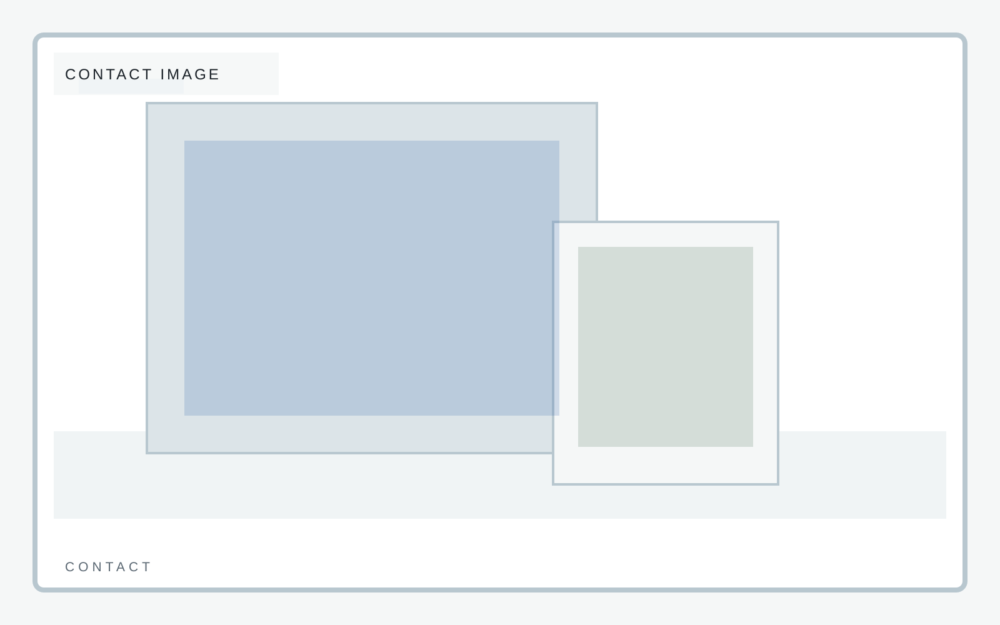

Launch pace
Ship inside two weeks
Fast-launch company site
A compact brochure template with disciplined spacing, clear positioning, and enough personality to avoid the usual interchangeable startup landing page. Short, direct, and still designed.
Fast-launch company site
Contact should be direct, short, and still visibly part of the design system.
